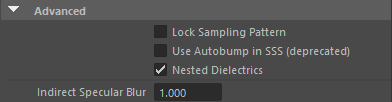
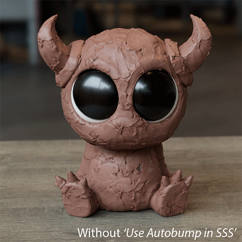
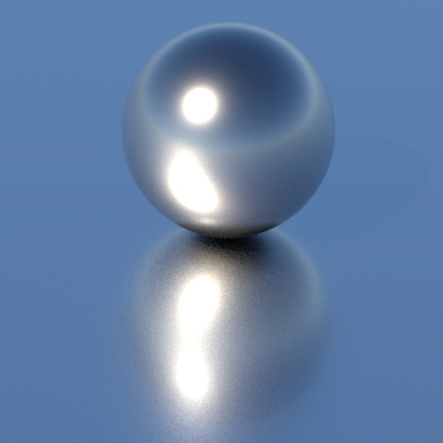
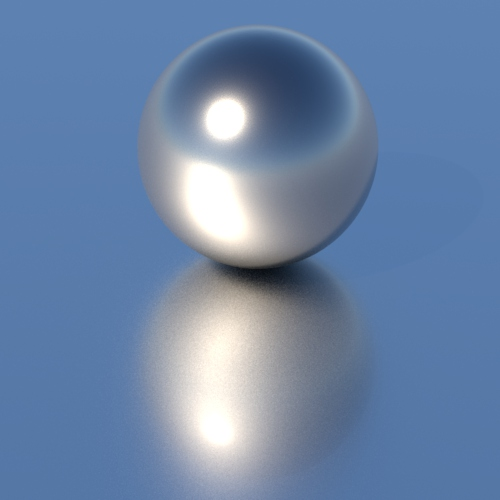

锁定 AA_seed，以使采样噪波不会随着帧编号而更改（避免胶片颗粒效果）。
如果启用此项，则自动凹凸 在 SSS 中可见。启用此选项将考虑 displacement_autobump 对光线跟踪 BSSRDF 结果产生的影响。这有助于在使用自动凹凸 时，更准确地捕捉曲面的高频细节。
请注意，启用此选项会使包含 SSS 的着色器求值操作增加两倍，从而导致渲染时间大幅增加。

启用嵌套电介质系统，以便在具有相邻电介质的场景中进行 IOR 跟踪。默认为启用。
设置间接镜面反射模糊以减少焦散噪波。设置为 0 可获得最精确的渲染，但渲染中存在噪波；增大该值可模糊焦散，减少噪波。
|  |  |
| 1（默认值） | 5 |